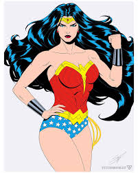

О персонаже
Чудо-женщина — это вымышленный супергерой, созданный Уильямом Молтоном Марстоном. Она является одной из самых известных героинь комиксов DC и символом феминизма. Дополнительную информацию можно найти на Википедии.
Чудо-женщина — это вымышленный супергерой, созданный Уильямом Молтоном Марстоном. Она является одной из самых известных героинь комиксов DC и символом феминизма. Дополнительную информацию можно найти на Википедии.